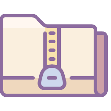

Inicio
incidentes
Solicitar
Accesos a Folder
Contacto

Solicitar Acceso a Folder
Por favor, completa el siguiente formulario para solicitar acceso a un folder en particular.
Ruta del Folder:
Tipo de Acceso:
Lectura
Lectura y Escritura
Enviar Solicitud